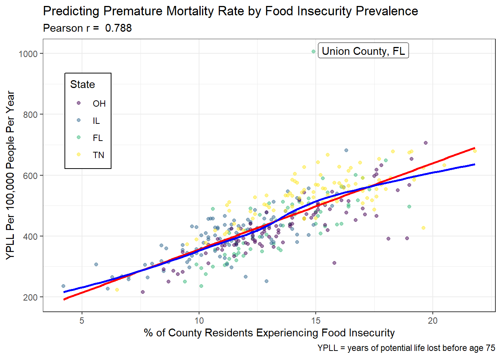
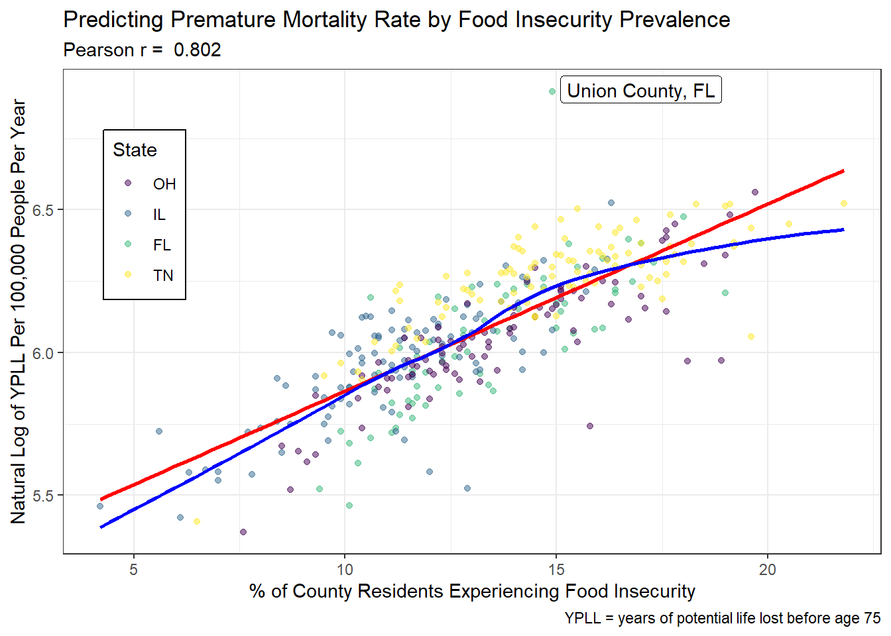
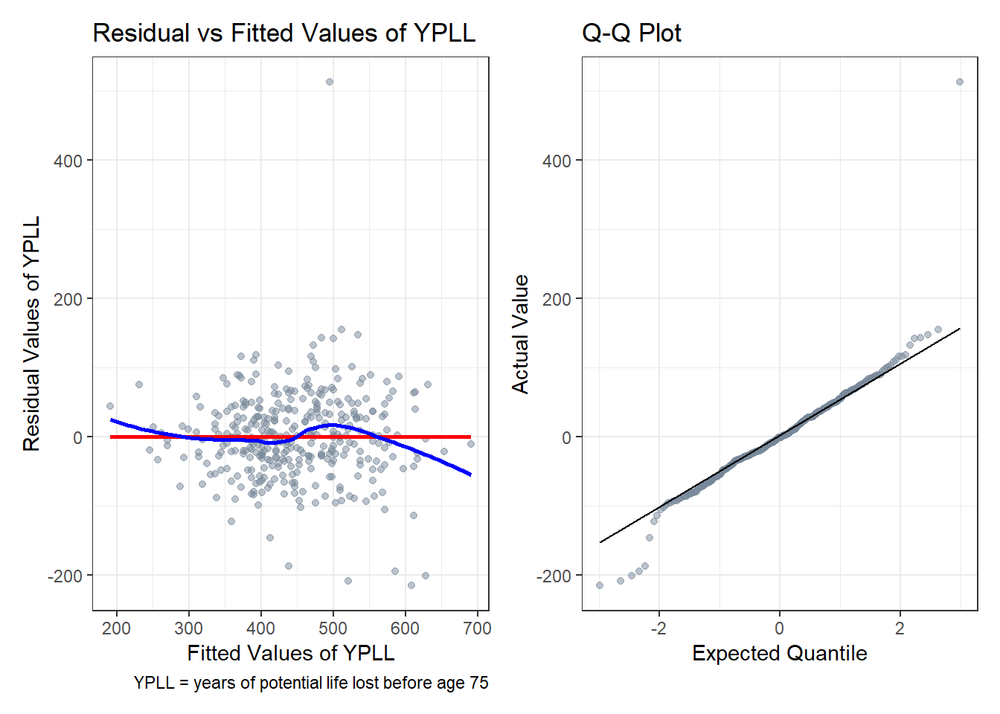
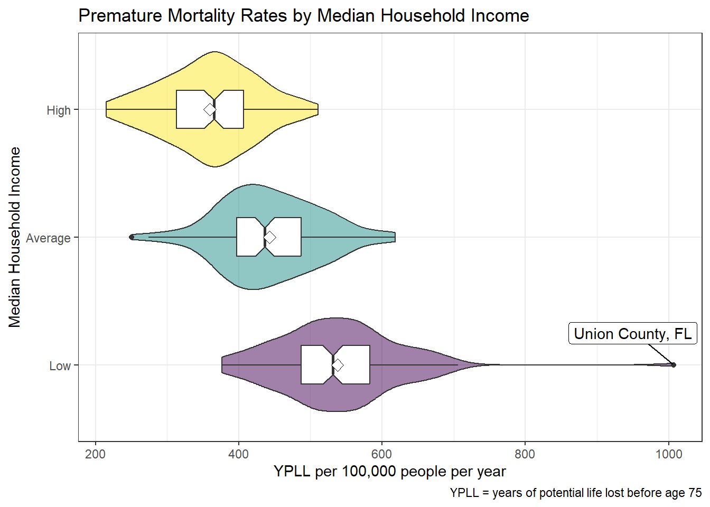
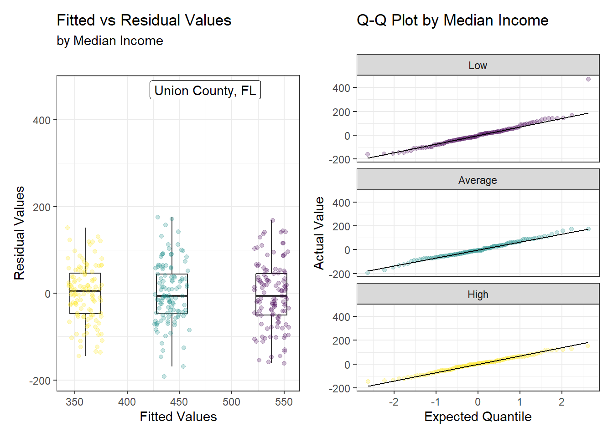
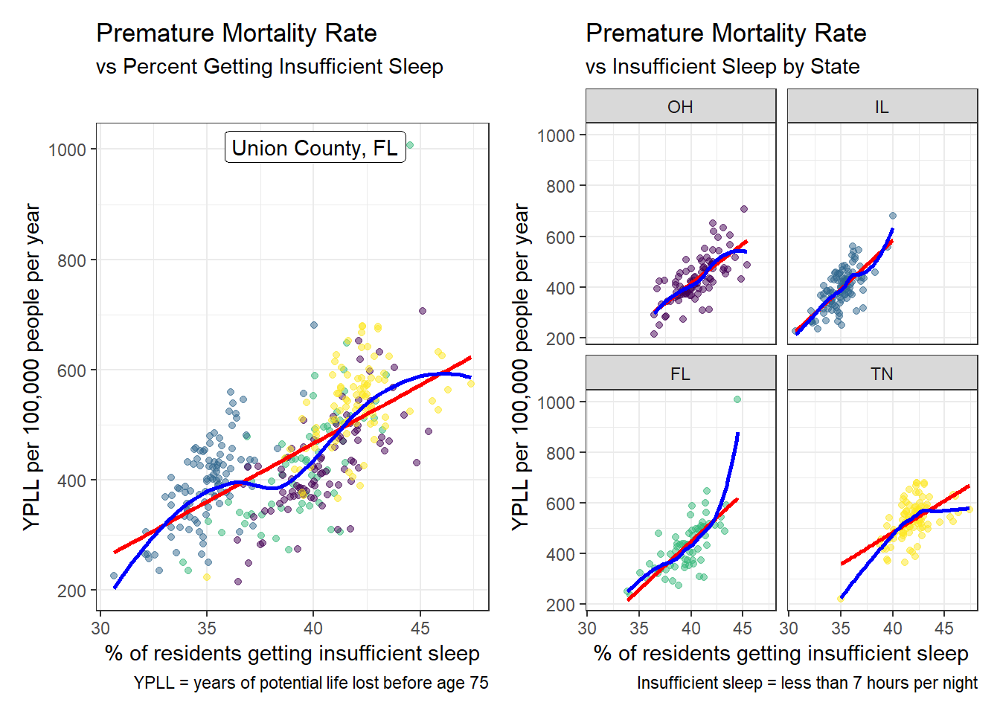
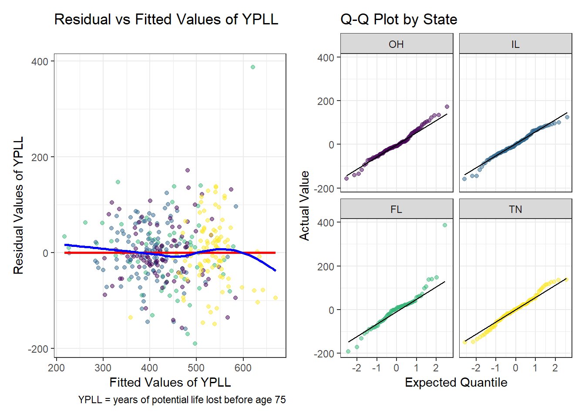
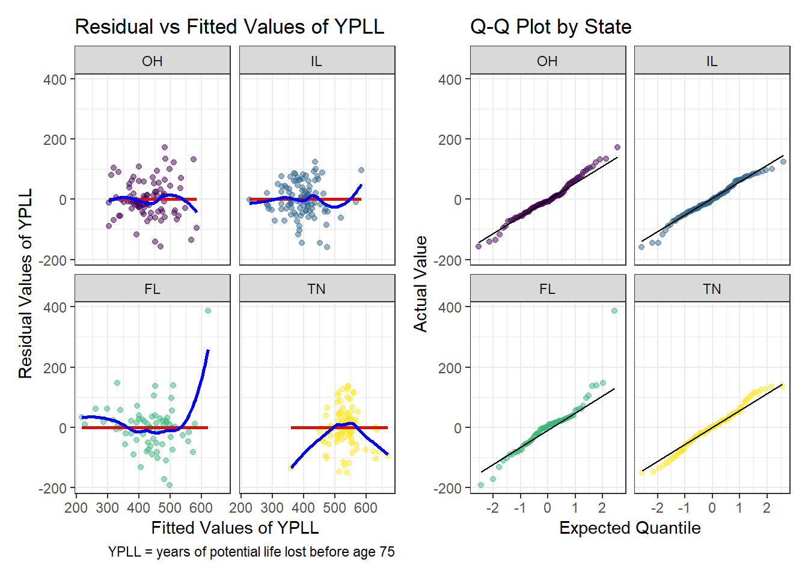

# RMarkdown Packages
library(knitr)
library(rmdformats)
# Global options
options(max.print="150"); opts_chunk$set(comment=NA); opts_knit$set(width=75)Gone Too Young: The Impact of Food, Sleep, and Income on Premature Mortality
Preliminaries
My Packages
# Packages used in this project
library(broom)
library(equatiomatic)
library(patchwork)
library(ggrepel)
library(kableExtra)
library(janitor)
library(naniar)
library(tidyverse)
# Set theme for plots
theme_set(theme_bw())Data Ingest
This project uses the 2022 CHR CSV Analytic Data from the County Health Rankings.
data_url <-
"https://www.countyhealthrankings.org/sites/default/files/media/document/analytic_data2022.csv"
# Read in CSV from the URL, skip the header row, use up to 4000 rows
# to guess column types, do not show the guessed column types
chr_2022_raw <- read_csv(data_url, skip = 1, guess_max = 4000,
show_col_types = FALSE)Data Development
Selecting My Data
I filtered my data for ranked counties in the states of Ohio, Florida, Illinois, and Tennessee and selected my variables of interest. I gave them more meaningful names than the original v-codes, scaled the proportions to percentages, and scaled the income to thousands of dollars.
chr_2022 <- chr_2022_raw |>
# Use only ranked counties from Ohio, Florida, Illinois, and Tennessee
filter(county_ranked == 1,
state %in% c('OH', 'FL', 'IL', 'TN')) |>
# Select the raw variables
select(fipscode, state, county, county_ranked,
v127_rawvalue, # premature death / years of life lost
v139_rawvalue, # proportion of county experiencing food insecurity
v143_rawvalue, # proportion of county experiencing insufficient sleep
v168_rawvalue, # proportion of county that has completed high school
v063_rawvalue # median income of county in dollars
) |>
# Give the variables new, meaningful names
rename(years_lost = v127_rawvalue, # outcome
food_insecurity = v139_rawvalue, # quantitative predictor 1
insufficient_sleep = v143_rawvalue, # quantitative predictor 2
hs_completion_raw = v168_rawvalue, # binary predictor
median_income_raw = v063_rawvalue, # categorical predictor
) |>
# Re-scale variables where necessary
mutate(food_insecurity = food_insecurity * 100, # converts to %
insufficient_sleep = insufficient_sleep * 100, # converts to %
hs_completion_raw = hs_completion_raw * 100, # converts to %
# converts to thousands of $
median_income_raw = median_income_raw / 1000) Repairing the fipscode and factoring the state
The fips code is a 5-digit identifier that was converted to a numeric variable on import. I repaired it by adding back any leading zeros that were stripped, and I converted the state to a factor.
chr_2022 <- chr_2022 |>
mutate(fipscode = str_pad(fipscode, 5, pad = "0"), # repair the fips code
# factorize state and make Ohio the baseline
state = fct_relevel(factor(state), 'OH', 'IL', 'FL', 'TN'))Creating a Binary Categorical Variable
I created a tibble of all ranked counties in the US to use in establishing the categorical variables levels based on national averages.
# Create a tibble of all ranked counties in the US
chr_2022_ranked <- chr_2022_raw |>
filter(county_ranked == 1) |>
# Select the raw variables
select(fipscode, state, county, county_ranked,
v127_rawvalue, # premature death / years of life lost
v139_rawvalue, # proportion of county experiencing food insecurity
v143_rawvalue, # proportion of county experiencing insufficient sleep
v168_rawvalue, # proportion of county that has completed high school
v063_rawvalue # median income of county in dollars
) |>
# Give the variables new, meaningful names
rename(years_lost = v127_rawvalue, # outcome
food_insecurity = v139_rawvalue, # quantitative predictor 1
insufficient_sleep = v143_rawvalue, # quantitative predictor 2
hs_completion_raw = v168_rawvalue, # binary predictor
median_income_raw = v063_rawvalue, # categorical predictor
) |>
# Re-scale variables where necessary
mutate(food_insecurity = food_insecurity * 100, # converts to %
insufficient_sleep = insufficient_sleep * 100, # converts to %
hs_completion_raw = hs_completion_raw * 100, # converts to %
# converts to thousands of $
median_income_raw = median_income_raw / 1000)From the tibble of all ranked US counties, I calculated the national median high school completion percentage (us_median_hs_completion = 88.78%) from hs_completion_raw and used this as a cut point to establish ‘Above Average’ and ‘Below Average’ high school completion categories for my sample.
# Calculate the median high school completion percentage
us_median_hs_completion = median(chr_2022_ranked$hs_completion_raw)
# Use this value to split variable into above and below average categories
chr_2022 <- chr_2022 |>
mutate(hs_completion_cat = factor(case_when(
hs_completion_raw < us_median_hs_completion ~ "Below Average",
TRUE ~ "Above Average"))) |>
# Reorder the the levels based on median value
mutate(hs_completion_cat = fct_reorder(hs_completion_cat,
hs_completion_raw, median))
# Summarize the categories
mosaic::favstats(data = chr_2022, hs_completion_raw ~ hs_completion_cat) |>
mutate(percent = scales::percent(n/nrow(chr_2022), accuracy = 0.1)) |>
select(hs_completion_cat, n, percent, median, mean, min, max) |>
kbl(col.names = c('Category', 'n', 'Percent', 'Median',
'Mean', 'Minimum', 'Maximum'),
digits = 2, align = 'c',
caption = 'Percentage High School Completion by Category') |>
kable_classic(full_width = FALSE)| Category | n | Percent | Median | Mean | Minimum | Maximum |
|---|---|---|---|---|---|---|
| Below Average | 176 | 50.0% | 84.94 | 83.85 | 56.14 | 88.77 |
| Above Average | 176 | 50.0% | 91.53 | 91.53 | 88.80 | 96.82 |
Creating a Multi-Category Variable
From the tibble of all US ranked counties, I calculated tertiles from median_income_raw and used these cut points (cut1 = 50.397 thousands of dollars, cut2 = 60.754 thousands of dollars) to establish ‘Low’, ‘Average’, and ‘High’ median income categories.
# Use the previously made tibble of all ranked US counties
# to calculate cut points for 3 equal quantiles
cut1 = quantile(chr_2022_ranked$median_income_raw,
probs = 0.333, na.rm = TRUE, names = FALSE)
cut2 = quantile(chr_2022_ranked$median_income_raw,
probs = 0.667, na.rm = TRUE, names = FALSE)
# Use these cut points to split column into low, average, and high categories
chr_2022 <- chr_2022 |>
mutate(median_income_cat = factor(case_when(
median_income_raw < cut1 ~ "Low",
median_income_raw < cut2 ~ "Average",
TRUE ~ "High"))) |>
# Reorder the levels based on median value
mutate(median_income_cat = fct_reorder(median_income_cat,
median_income_raw, median))
# Summarize the categories
mosaic::favstats(data = chr_2022, median_income_raw ~ median_income_cat) |>
mutate(percent = scales::percent(n/nrow(chr_2022), accuracy = 0.1)) |>
select(median_income_cat, n, percent, median, mean, min, max) |>
kbl(col.names = c('Category', 'n', 'Percent', 'Median',
'Mean', 'Minimum', 'Maximum'),
digits = 3, align = 'c',
caption = 'Median Household Income by Category') |>
kable_classic(full_width = FALSE)| Category | n | Percent | Median | Mean | Minimum | Maximum |
|---|---|---|---|---|---|---|
| Low | 119 | 33.8% | 46.080 | 45.646 | 32.163 | 50.297 |
| Average | 117 | 33.2% | 55.128 | 55.359 | 50.626 | 60.715 |
| High | 116 | 33.0% | 68.008 | 70.645 | 60.779 | 118.257 |
Revise order of variables
I relocated the county_ranked column to the end of the tibble so that the primary variables print more clearly. I also applied clean_names() to ensure I had unique and clearly formatted variable names.
# Move county_ranked to the end and make sure column names are clean
chr_2022 <- chr_2022 |>
relocate(county_ranked, .after = last_col()) |>
clean_names()Three Important Checks
Missingness
None of my variables are missing any values, so my data set meets the requirement that it must have data for at least 75% of the counties in each state.
# Use naniar to summarize missing values
chr_2022 |>
miss_var_summary() |>
mutate(pct_miss = scales::percent(1-pct_miss)) |>
kbl(col.names = c('Variable', '# Missing', '% Complete'),
align = c('l', 'c', 'c'),
caption = 'Missingness Summary') |>
kable_classic(full_width = FALSE, 'striped')| Variable | # Missing | % Complete |
|---|---|---|
| fipscode | 0 | 100% |
| state | 0 | 100% |
| county | 0 | 100% |
| years_lost | 0 | 100% |
| food_insecurity | 0 | 100% |
| insufficient_sleep | 0 | 100% |
| hs_completion_raw | 0 | 100% |
| median_income_raw | 0 | 100% |
| hs_completion_cat | 0 | 100% |
| median_income_cat | 0 | 100% |
| county_ranked | 0 | 100% |
Distinctiveness
My variables have between 113 and 352 distinct values each, so my data set meets the requirement of having at least 10 distinct non-missing values per variable.
# Count distinct cases for all variables
chr_2022 |>
summarise(across(years_lost:median_income_raw, ~ n_distinct(.))) |>
kbl(caption = 'Number of Distinct Values',
align = c('c', 'c', 'c', 'c', 'c')) |>
kable_classic(full_width = FALSE)| years_lost | food_insecurity | insufficient_sleep | hs_completion_raw | median_income_raw |
|---|---|---|---|---|
| 352 | 113 | 352 | 352 | 351 |
Category Factor Completeness
The categories of my categorical variables have between 116 and 176 counties per level, so my data set meets the requirement that every level of the factor for categorical variables must include at least 10 counties.
# Use tabyl to count the counties per binary category level
chr_2022 |> tabyl(hs_completion_cat) |>
adorn_pct_formatting() |>
kbl(col.names = c('High School Completion Category',
'# of Counties', 'Percent'), align = 'lcc') |>
kable_classic(full_width = FALSE)| High School Completion Category | # of Counties | Percent |
|---|---|---|
| Below Average | 176 | 50.0% |
| Above Average | 176 | 50.0% |
# Use tabyl to count the counties per multi category level
chr_2022 |> tabyl(median_income_cat) |>
adorn_pct_formatting(digits = 1) |>
kbl(col.names = c('Median Income Category', '# of Counties', 'Percent'),
align = 'lcc') |>
kable_classic(full_width = FALSE)| Median Income Category | # of Counties | Percent |
|---|---|---|
| Low | 119 | 33.8% |
| Average | 117 | 33.2% |
| High | 116 | 33.0% |
Our Analytic Tibble
Printing My Tibble
Below is my final tibble containing 352 counties and 11 variables.
chr_2022# A tibble: 352 × 11
fipscode state county years…¹ food_…² insuf…³ hs_co…⁴ media…⁵ hs_co…⁶ media…⁷
<chr> <fct> <chr> <dbl> <dbl> <dbl> <dbl> <dbl> <fct> <fct>
1 12001 FL Alach… 360. 13.4 36.0 92.8 52.0 Above … Average
2 12003 FL Baker… 490. 12.2 43.2 84.9 61.5 Below … High
3 12005 FL Bay C… 479. 15 39.8 90.9 61.3 Above … High
4 12007 FL Bradf… 503. 16.4 41.4 78.9 48.3 Below … Low
5 12009 FL Breva… 418. 12 40.7 92.2 65.9 Above … High
6 12011 FL Browa… 306. 9.9 41.3 89.4 63.9 Above … High
7 12013 FL Calho… 508. 14.7 41.0 77.9 44.0 Below … Low
8 12015 FL Charl… 352. 13.5 39.8 90.8 58.4 Above … Average
9 12017 FL Citru… 543. 15.5 42.9 89.5 48.6 Above … Low
10 12019 FL Clay … 376. 10.8 41.0 92.1 72.5 Above … High
# … with 342 more rows, 1 more variable: county_ranked <dbl>, and abbreviated
# variable names ¹years_lost, ²food_insecurity, ³insufficient_sleep,
# ⁴hs_completion_raw, ⁵median_income_raw, ⁶hs_completion_cat,
# ⁷median_income_catSummarizing My Tibble
Below is a summary of my final tibble, containing 352 counties and 11 variables, which confirms that I have no missing variables and a sufficient number of distinct raw values. Additional information about these variables, whose names will not change during the course of this project, can be found in the code book.
Hmisc::describe(chr_2022, descript = 'Summary of chr_2022')Summary of chr_2022
11 Variables 352 Observations
--------------------------------------------------------------------------------
fipscode
n missing distinct
352 0 352
lowest : 12001 12003 12005 12007 12009, highest: 47181 47183 47185 47187 47189
--------------------------------------------------------------------------------
state
n missing distinct
352 0 4
Value OH IL FL TN
Frequency 88 102 67 95
Proportion 0.25 0.29 0.19 0.27
--------------------------------------------------------------------------------
county
n missing distinct
352 0 262
lowest : Adams County Alachua County Alexander County Allen County Anderson County
highest: Wilson County Winnebago County Wood County Woodford County Wyandot County
--------------------------------------------------------------------------------
years_lost
n missing distinct Info Mean Gmd .05 .10
352 0 352 1 447.6 115.8 284.7 317.3
.25 .50 .75 .90 .95
376.4 436.7 515.6 579.8 624.3
lowest : 215.1964 223.2349 226.0207 235.5931 235.8080
highest: 678.3199 679.4405 681.1674 706.2588 1007.1342
--------------------------------------------------------------------------------
food_insecurity
n missing distinct Info Mean Gmd .05 .10
352 0 113 1 13.23 3.259 8.70 9.90
.25 .50 .75 .90 .95
11.28 13.00 15.20 17.00 18.00
lowest : 4.2 5.6 6.1 6.3 6.5, highest: 19.2 19.6 19.7 20.5 21.8
--------------------------------------------------------------------------------
insufficient_sleep
n missing distinct Info Mean Gmd .05 .10
352 0 352 1 39.11 3.726 33.92 34.55
.25 .50 .75 .90 .95
36.09 39.67 41.60 42.77 43.37
lowest : 30.64410 32.11241 32.14448 32.20530 32.29310
highest: 45.84424 45.85811 46.02228 46.31325 47.38216
--------------------------------------------------------------------------------
hs_completion_raw
n missing distinct Info Mean Gmd .05 .10
352 0 352 1 87.69 5.435 78.93 80.78
.25 .50 .75 .90 .95
84.95 88.79 91.52 92.99 93.70
lowest : 56.14279 69.08033 71.91955 73.15868 73.53464
highest: 95.22472 95.24634 95.81135 96.23150 96.81737
--------------------------------------------------------------------------------
median_income_raw
n missing distinct Info Mean Gmd .05 .10
352 0 351 1 57.11 13.02 42.10 44.30
.25 .50 .75 .90 .95
48.31 55.00 63.92 71.67 76.34
lowest : 32.163 33.109 36.527 37.683 38.315
highest: 94.343 97.263 100.325 114.423 118.257
--------------------------------------------------------------------------------
hs_completion_cat
n missing distinct
352 0 2
Value Below Average Above Average
Frequency 176 176
Proportion 0.5 0.5
--------------------------------------------------------------------------------
median_income_cat
n missing distinct
352 0 3
Value Low Average High
Frequency 119 117 116
Proportion 0.338 0.332 0.330
--------------------------------------------------------------------------------
county_ranked
n missing distinct Info Mean Gmd
352 0 1 0 1 0
Value 1
Frequency 352
Proportion 1
--------------------------------------------------------------------------------Saving My Tibble
Finally, I saved my tibble as chr_2022_SarahGrabinski.Rds in my project.
saveRDS(chr_2022, file = 'chr_2022_SarahGrabinski.Rds')Codebook
Table of States with County Counts
I selected states based on whether the state was a toss-up, safely Democrat, or safely Republican based on ratings from Ballotpedia’s compilation of forecasts for the 2020 election to try and balance my sample for policy choices that affect health outcomes. I selected Florida, Illinois, and Tennessee in addition to Ohio because they had a large number of counties each and a similar number of counties to each other, such that no state was unevenly represented in my sample. This selection also had distributions which closely matched the nationwide distribution for most variables, which improves the internal and external validity of my models.
| State | Postal Abbreviation | Political Leaning |
|---|---|---|
| Ohio | OH | Lean Republican |
| Florida | FL | Toss Up |
| Tennessee | TN | Safely Republican |
| Illinois | IL | Safely Democrat |
# Use tabyl to summarize counties by state
chr_2022 |>
tabyl(state) |>
adorn_totals() |>
adorn_pct_formatting() |>
kbl(col.names = c('State', 'Number of Counties', 'Percent'),
align = 'ccc') |>
kable_classic(full_width = FALSE, 'striped')| State | Number of Counties | Percent |
|---|---|---|
| OH | 88 | 25.0% |
| IL | 102 | 29.0% |
| FL | 67 | 19.0% |
| TN | 95 | 27.0% |
| Total | 352 | 100.0% |
Table of Variables, Descriptions and Roles
| Variable | v Code | Description | Analytic Role | Missing |
|---|---|---|---|---|
| fipscode | – | 5-digit state+county identifier | ID | 0 |
| county | – | name of county | – | 0 |
| state | – | postal abbreviation of state | – | 0 |
| years_lost | v127 | years of potential life lost (YPLL) before age 75 per 100k population per year (age-adjusted) | outcome | 0 |
| food_insecurity | v139 | % of population who lack adequate access to food | quantitative predictor | 0 |
| insufficient_sleep | v143 | % of adults reporting fewer than 7 hrs of sleep on average (age-adjusted) | quantitative predictor | 0 |
| hs_completion_raw | v168 | % of adults 25+ with high school diploma or equivalent | – | 0 |
| hs_completion_cat | v168 | Above Average (>= 88.8%), Below Average (< 88.8%)* | binary predictor | 0 |
| median_income_raw | v063 | median household income in thousands of dollars | – | 0 |
| median_income_cat | v063 | Low (< 50.4), Average (50.4-60.8), High (> 60.8), in thousands of dollars** | multi-categorical predictor | 0 |
| county_ranked | – | whether the county is ranked | – | 0 |
*Median high school completion percentage for all US counties
**Based on 3 tertiles of median income across all US counties
Details on my Variables from CHR
Additional details on my chosen variables can be found via the summaries linked on the County Health Rankings site.
Outcome variable:
years_lostwas originallyv127_rawvalueand is listed in the Length of Life subcategory under Health Outcomes at County Health Rankings. It is a rate which quantifies the number of years of potential life lost (YPLL) before age 75 per 100,000 people per year. It is based on the sum of all years lost before age 75 from 2018-2020 according to the National Center for Health Statistics Mortality Files divided by the total population of the county during that time, and it was age-adjusted using the 2000 census data.Quantitative Predictor 1:
food_insecuritywas originallyv139_rawvalueand is listed in the Diet and Exercise subcategory of the Health Behaviors category under Health Factors at County Health Rankings. It estimates the proportion of county residents who lack adequate access to food, including the ability to provide balanced meals, as determined by Map The Meal Gap project. It was multiplied by 100 to convert it from a proportion to a percentage. Data from 2019 was used in the Core Food Insecurity Model, which pulls information from the Community Population Survey, Bureau of Labor Statistics, and American Community Survey.Quantitative Predictor 2:
insufficient_sleepwas originallyv143_rawvalueand is listed in the Other Health Behaviors subcategory of the Health Behaviors category under Health Factors at County Health Rankings. It estimates the proportion of county residents who report sleeping less than 7 hours per night on average. It was multiplied by 100 to convert it from a proportion to a percentage. It is calculated using 2018 Behavioral Risk Factor Surveillance System survey results and modeled by the PLACES project using data for the American Community Survey. It is age-adjusting using the 2000 census data.Binary Predictor:
hs_completion_rawwas originallyv168_raw_valueand is listed in the Education subcategory of the Social & Economic Factors category under Health Factors at County Health Rankings. This measure is the proportion of adults ages 25+ with a high school diploma or equivalent and is calculated from 2016-2020 American Community Survey data. It was multiplied by 100 to convert it from a proportion to a percentage and split into two categories to becomehs_completion_cat. The raw value was split into ‘Above Average’ and ‘Below Average’ categories using the median high school completion percentage for all US counties, 88.8%.Multi-Categorical Predictor:
median_income_rawwas originallyv063_raw_value. This measure is the median household income, or the income where half of households in a county earn more and half of households earn less. It is based on 2020 data and modeling from the US Census Bureau using American Community Survey data. It was divided by 1000 to represent income in thousands of dollars and was split into three categories to becomemedian_income_cat. The raw value was split into three tertiles using the distribution of median household incomes across all US counties. ‘Low’ median household incomes are less than $50,397, ‘Average’ median household incomes range from $50,398 to $60,754, and ‘High’ median household incomes are greater than $60,755.
Biggest Challenge
The most challenging part of my proposal was organization. I was having difficulty ensuring I completed all tasks when following the sample proposal. To me, and probably by design, it seemed less like a template and more like a road map. I also wanted my proposal to appear like a report so I could potentially add it to my portfolio. I finished variable selection and the coding portion of the proposal prior to the early submission deadline. I found myself spending a great deal of subsequent time trying to scroll back and forth to make sure I had completed all the tasks in various locations. Eventually, your advice to not spend more than 15’ on a problem kicked in. I stopped working and took a step back. I ignored all my code and created an outline of my proposal based only on the requirements. Once I was satisfied with the order, it took me very little time compared to how much I would have spent with my previous strategy to complete and check my work. My biggest concern remaining was that by deviating from the sample proposal, I made the requirements too difficult to find, even though it made more sense to me arranged like this.
For this final project, I rearranged everything to match the sample.
Analysis 1
The Variables
The predictive variable I chose for this analysis is the percentage of residents experiencing food insecurity (food_insecurity), which estimates the proportion of residents in each county who lack adequate access to food or the ability to provide balanced meals. The outcome I will predict is the rate of premature mortality (years_lost) in years of potential life lost before the age of 75 per 100,000 people per year (YPLL). Neither food_insecurity nor years_lost is missing data for any of the 352 counties in Ohio, Florida, Illinois, and Tennessee. Although no data is missing, I will use a tibble called model1_data that contains only fipscode, state, county, years_lost, and food_insecurity for simplicity’s sake.
In Cuyahoga County, Ohio, the rate of premature mortality is 431.16 years of potential life lost before age 75 per 100,000 people per year, and the CHR estimates that 13.9% of residents experience food insecurity.
# Create a limited data set for model 1
model1_data <- chr_2022 |>
select(fipscode, state, county, years_lost, food_insecurity)
# Identify and display the values for Cuyahoga County
model1_data |>
filter(state == 'OH', county == 'Cuyahoga County') |>
select(state, county, years_lost, food_insecurity) |>
kbl(col.names = c('State', 'County', 'years_lost', 'food_insecurity'),
align = 'llcc', digits = 2) |>
kable_classic(full_width = FALSE)| State | County | years_lost | food_insecurity |
|---|---|---|---|
| OH | Cuyahoga County | 431.16 | 13.9 |
Research Question
Since lack of consistent access to food is linked to negative health outcomes, as the percentage of residents experiencing food insecurity increases in 352 counties in Ohio, Illinois, Tennessee, and Florida, at what rate does the county’s risk of premature mortality, as assessed by years of potential life lost before the age of 75 per 100,000 people per year, also increase?
Data Visualization
There is a positive relationship between the percentage of county residents experiencing food insecurity (predictor) and the years of potential life lost before age 75 (YPLL) per 100,000 people per year (outcome), such that as the prevalence of food insecurity increases by 1%, the risk of premature mortality increases by approximately 75 YPLL per 100,000 people per year. There is not an obvious pattern with regards to the state in which a county resides. A linear model is appropriate here as the LOESS curve closely approximates the linear fitted line. The points are also closely clustered along the length of both models. There is one significant outlier (Union County, Florida), which is about 300 YPLL above the next highest value.
ggplot(model1_data, aes(x = food_insecurity, y = years_lost)) +
geom_point(aes(color = state), alpha = 0.5) +
scale_color_viridis_d(name = 'State') +
geom_smooth(method = 'lm', formula = y ~ x, se = FALSE, col = 'red') +
geom_smooth(method = 'loess', formula = y ~ x, se = FALSE, col = 'blue') +
geom_label_repel(data = filter(model1_data, years_lost > 1000),
aes(x = food_insecurity, y = years_lost,
label = paste(county, state, sep = ', '))) +
labs(x = '% of County Residents Experiencing Food Insecurity',
y = 'YPLL Per 100,000 People Per Year',
title =
'Predicting Premature Mortality Rate by Food Insecurity Prevalence',
subtitle = paste("Pearson r = ",
round_half_up(cor(model1_data$food_insecurity,
model1_data$years_lost),
3)),
caption = 'YPLL = years of potential life lost before age 75') +
theme(legend.position = c(0.1, 0.7),
legend.background = element_rect(fill = "white", color = "black"))
Transformation Assessment
The most promising transformation was the log of YPLL. A Box-Cox plot for my 3 predictors (food_insecurity, median_income_cat, insufficient_sleep) versus my outcome (years_lost) recommended a power transformation of approximately lambda = 0.5, which is the square root and not an available option. The estimate of lambda ranged from 0 to 1, indicating the next best options were to use a log transformation or to not transform at all. As seen below, the loess curve tracks the linear curve for the transformed data, although less well than for the untransformed data. Using this transformation also did not violate any of the assumptions about the residuals of linear models. I decided not to use a transformation of my outcome because without noticeable cost to fit, using the untransformed data produces a more easily interpreted model for my audience. Communication is a key component of the ‘Conclusion’ step of the PPDAC cycle, so I have prioritized simplicity at little cost to the model for the sake of my audience’s understanding.
ggplot(model1_data, aes(x = food_insecurity, y = log(years_lost))) +
geom_point(aes(color = state), alpha = 0.5) +
geom_smooth(formula = y ~ x, method = 'lm', se = FALSE, col = 'red') +
geom_smooth(formula = y ~ x, method = 'loess', se = FALSE, col = 'blue') +
geom_label_repel(data = filter(model1_data, years_lost > 1000),
aes(x = food_insecurity, y = log(years_lost),
label = paste(county, state, sep = ', '))) +
scale_color_viridis_d(name = 'State') +
labs(x = '% of County Residents Experiencing Food Insecurity',
y = 'Natural Log of YPLL Per 100,000 People Per Year',
title =
'Predicting Premature Mortality Rate by Food Insecurity Prevalence',
subtitle = paste("Pearson r = ",
round_half_up(cor(model1_data$food_insecurity,
log(model1_data$years_lost)),
3)),
caption = 'YPLL = years of potential life lost before age 75') +
theme(legend.position = c(0.1, 0.7),
legend.background = element_rect(fill = "white", color = "black"))
The Fitted Model
The Prediction Equation
This linear model predicts that the years of potential life lost before age 75 per 100,000 people per year is 72.51 YPLL (y-intercept) plus 28.35 times the percentage of county residents experiencing food insecurity.
# Create the linear model
model1 <- lm(years_lost ~ food_insecurity, data = model1_data)
# Extract the equation
extract_eq(model1, use_coefs = TRUE, coef_digits = 2)\[ \operatorname{\widehat{years\_lost}} = 72.51 + 28.35(\operatorname{food\_insecurity}) \]
The Model Coefficients
The y-intercept for this model is 72.51 YPLL (90% CI: 46.09-98.92) with a standard error of 16.02 YPLL and the slope is 28.35 YPLL per percent of residents experiencing food insecurity (90% CI: 26.40-30.30) with a standard error of 1.18 YPLL per percent of residents experiencing food insecurity.
# Use tidy to extract the estimates, SE, and a 90% CI for model coefficients
tidy(model1, conf.int = TRUE, conf.level = 0.9) |>
select(term, estimate, std.error, conf.low, conf.high) |>
kbl(col.names = c('Term', 'Estimate', 'Std. Error',
'90% CI Low', '90% CI High'),
digits = 2, align = 'lcccc',
caption = 'Model Coefficients') |>
kable_classic(full_width = FALSE)| Term | Estimate | Std. Error | 90% CI Low | 90% CI High |
|---|---|---|---|---|
| (Intercept) | 72.51 | 16.02 | 46.09 | 98.92 |
| food_insecurity | 28.35 | 1.18 | 26.40 | 30.30 |
Summaries of Model Fit
The correlation between food insecurity and premature mortality rate is 0.788. Using 352 counties to predict YPLL by the prevalence of food insecurity, the variance in food insecurity explains 62.1% (R2 = 0.621) of the variation in premature mortality rate. The residual standard error of this model is 63.95 years of potential life lost before age 75 per 100,000 people per year.
# Use glance to extract R2, RSE, and # of counties from model1
glance(model1) |>
select(r.squared, sigma, nobs) |>
# Take the square root of R-squared to calculate Pearson's r
mutate(correlation = sqrt(r.squared)) |>
kbl(col.names = c('R-Squared', 'Residual Std Error',
'# of Counties', 'Correlation'),
digits = c(3, 2, 0, 3), align = 'c',
caption = 'Model Fit Summaries') |>
kable_classic(full_width = FALSE)| R-Squared | Residual Std Error | # of Counties | Correlation |
|---|---|---|---|
| 0.621 | 63.95 | 352 | 0.788 |
Residual Analysis
This model conforms to all the assumptions of a linear model. The regression relationship is linear as no curve forms when plotting the residuals against the fitted values. Although there are a few outliers not well predicted by the model, the regression residuals overall show similar variance across all levels of the fitted values with no meaningful pattern. Finally, minus a few outliers at the extremes, the residuals are well described by a normal model as demonstrated by the Q-Q plot.
# Augment model1 with the original data
model1_aug <- augment(model1, data = model1_data)
p1 <- ggplot(model1_aug, aes(x = .fitted, y = .resid)) +
geom_point(color = 'lightslategrey', alpha = 0.5) +
geom_smooth(method = 'lm', formula = y ~ x, se = FALSE, col = 'red') +
geom_smooth(method = 'loess', formula = y ~ x, se = FALSE, col = 'blue') +
labs(x = 'Fitted Values of YPLL',
y = 'Residual Values of YPLL',
title = 'Residual vs Fitted Values of YPLL',
caption = 'YPLL = years of potential life lost before age 75')
p2 <- ggplot(model1_aug, aes(sample = .resid)) +
geom_qq(color = 'lightslategrey', alpha = 0.5) +
geom_qq_line() +
labs(x = 'Expected Quantile',
y = 'Actual Value',
title = 'Q-Q Plot')
p1 + p2
For Cuyahoga County, Ohio, the fitted model value of 466.58 YPLL reasonably approximates the actual value of 431.16 YPLL with a residual of -35.41 YPLL.
# Select and display Cuyahoga County's stats from the augmented model
model1_aug |>
filter(state == 'OH', county == 'Cuyahoga County') |>
select(state, county, years_lost, .fitted, .resid) |>
kbl(col.names = c('State', 'County', 'Actual', 'Fitted', 'Residual'),
digits = 2, align = 'llccc',
caption =
'Cuyahoga County, OH - Years of Premature Life Lost') |>
kable_classic(full_width = FALSE)| State | County | Actual | Fitted | Residual |
|---|---|---|---|---|
| OH | Cuyahoga County | 431.16 | 466.58 | -35.42 |
Unsurprisingly, the county predicted least well by this model is Union County, Florida with a residual of 512.20 YPLL. The second worst prediction by this model is for Athens County, Ohio with a residual of -215.81 YPLL.
# Select and display the 2 counties with the worst residuals
model1_aug |>
arrange(desc(abs(.resid))) |>
select(state, county, years_lost, .fitted, .resid) |>
head(2) |>
kbl(col.names = c('State', 'County', 'Actual', 'Fitted', 'Residual'),
digits = 2, align = 'llccc',
caption =
'Least Successfully Fitted Counties') |>
kable_classic(full_width = FALSE)| State | County | Actual | Fitted | Residual |
|---|---|---|---|---|
| FL | Union County | 1007.13 | 494.93 | 512.20 |
| OH | Athens County | 392.53 | 608.34 | -215.81 |
Conclusions and Limitations
It has been demonstrated that the lack of consistent access to food is associated with negative health outcomes, so this model sought to determine the degree to which premature mortality risk increases, as measured by years of potential life lost before age 75 per 100,000 people per year, with each increase in the percentage of county residents who experience food insecurity. This model indicates a positive relationship between the two measures and predicts that with a 1% increase in the prevalence of food insecurity in a county, the premature mortality rate will increase by 26.40-30.30 YPLL per 100,000 people per year. Using a risk ratio calculation, this amounts to a 4-15% increase in risk with every 1% increse in food insecurity prevalence. The y-intercept is non-negative (90% CI: 46.09-98.92), which suggests that eliminating food insecurity would not eliminate the risk of premature mortality.
A key limitation of this model is that the prevalence of food insecurity in a county is a modeled value based on survey responses, poverty, unemployment, home ownership, and disability prevalence measures at the state level. Self-reported data may not accurately represent the true nature of my sample, and the assumptions that produce this model may not hold for counties with small populations, which both limit the inferences which can be drawn about the sample from this data. In fact, of the top 10 worst predicted counties, Athens County is the only county with a population greater than 20,000. My sample is not truly random, which threatens internal validity, although the distribution of food insecurity prevalence does match the nationwide distribution. Additionally, poverty is used to estimate food insecurity in the original model. Poverty is strongly associated with premature mortality, so this relationship may indicate a confounding variable rather than a true association.
Analysis 2
The Variables
The predictive variable I chose for this analysis is the median household income (median_income_cat), divided into ‘Low’, ‘Average’, and ‘High’ tertiles, which estimates the median household income of residents in each county. The outcome I will predict is the rate of premature mortality (years_lost) in years of potential life lost (YPLL) before the age of 75 per 100,000 people per year. Neither median_income_cat nor years_lost is missing data for any of the 352 counties in Ohio, Florida, Illinois, and Tennessee. Although no data is missing, I will use a tibble called model2_data that contains only fipscode, state, county, years_lost, and median_income_cat for simplicity’s sake. In Cuyahoga County, Ohio, the rate of premature mortality is 431.16 years lost per 100,000 people per year, and the median household income is $55,128.
# Create a limited data set for model 2
model2_data <- chr_2022 |>
select(fipscode, state, county, years_lost,
median_income_cat, median_income_raw)
# Identify and display the values for Cuyahoga County
model2_data |>
filter(state == 'OH', county == 'Cuyahoga County') |>
select(state, county, years_lost, median_income_raw, median_income_cat) |>
kbl(col.names = c('State', 'County', 'years_lost',
'Raw Median Income', 'Income Category'),
align = 'llccc', digits = 2) |>
kable_classic(full_width = FALSE)| State | County | years_lost | Raw Median Income | Income Category |
|---|---|---|---|---|
| OH | Cuyahoga County | 431.16 | 55.13 | Average |
Research Question
Knowing poverty’s negative impact on health outcomes, among 352 counties in Ohio, Illinois, Florida, and Tennessee, do counties with lower median household incomes disproportionately bear the costs of premature mortality, as measured by years of premature life lost before age 75 per 100,000 people per year, or does this effect persist in counties with average median incomes as well?
Data Visualization
There is a negative relationship between the median household income (predictor) and the years of potential life lost before age 75 (YPLL) per 100,000 people per year (outcome), such that as the median household income increases, the risk of premature mortality decreases. There is a great deal of overlap, so the observed differences may not be meaningful. Values are approximately normally distributed within each category, and the categories appear to have similar variances, therefore using a linear model would be appropriate. There is one significant outlier (Union County, Florida), which is about 300 YPLL above the next highest value.
ggplot(model2_data, aes(x = years_lost, y = median_income_cat)) +
geom_violin(aes(fill = median_income_cat), alpha = 0.5) +
geom_boxplot(width = 0.3, notch = TRUE) +
stat_summary(fun = "mean", geom = "point",
shape = 23, size = 3, fill = "white") +
scale_fill_viridis_d(name = 'Median Income') +
geom_label_repel(data = filter(model2_data, years_lost > 1000),
aes(x = years_lost, y = median_income_cat,
label = paste(county, state, sep = ', ')), nudge_y = 0.25) +
labs(x = 'YPLL per 100,000 people per year',
y = 'Median Household Income',
title = 'Premature Mortality Rates by Median Household Income',
caption = 'YPLL = years of potential life lost before age 75') +
guides(fill = 'none')
The Fitted Model
The Prediction Equation
After fitting a linear model, the years of potential life lost before age 75 per 100,000 people per year is predicted to be 537.69 YPLL for counties with a low median income, 94.72 years lower than the low median income or 442.97 YPLL for counties with average median incomes, and 177.93 years lower than the low median income or 359.76 YPLL for counties with high median incomes.
# Create the linear model
model2 <- lm(years_lost ~ median_income_cat, data = model2_data)
# Extract the equation
extract_eq(model2, use_coefs = TRUE, wrap = TRUE,
terms_per_line = 1, coef_digits = 2, operator_location = 'start',
swap_var_names = c('median_income_cat' = 'median_income'))\[ \begin{aligned} \operatorname{\widehat{years\_lost}} &= 537.69\\ &\quad - 94.72(\operatorname{median\_income}_{\operatorname{Average}})\\ &\quad - 177.93(\operatorname{median\_income}_{\operatorname{High}}) \end{aligned} \]
The Model Coefficients
The intercept, representing YPLL for low median incomes, is predicted to be 537.69 (90% CI: 526.48-548.89). The coefficient for the average median income category is predicted to be 94.72 YPLL lower than that for low median incomes, resulting in a predicted value of 442.97 YPLL (90% CI: 426.82-458.88). The coefficient for the high median income category is predicted to be 177.93 YPLL lower than that for low median incomes, resulting in a predicted value of 359.76 YPLL (90% CI: 343.82-375.71).
# Use tidy to extract the term, estimate, std error, and 90% CI from model2
tidy(model2, conf.int = TRUE, conf.level = 0.9) |>
select(term, estimate, std.error, conf.low, conf.high) |>
kbl(col.names = c('Term', 'Estimate', 'Std. Error',
'90% CI Low', '90% CI High'),
digits = 2, align = 'lcccc',
caption = 'Model Coefficients') |>
kable_classic(full_width = FALSE)| Term | Estimate | Std. Error | 90% CI Low | 90% CI High |
|---|---|---|---|---|
| (Intercept) | 537.69 | 6.79 | 526.48 | 548.89 |
| median_income_catAverage | -94.72 | 9.65 | -110.63 | -78.81 |
| median_income_catHigh | -177.93 | 9.67 | -193.87 | -161.98 |
Summaries of Model Fit
The correlation between the median income category and premature mortality rate is 0.702. Using 352 counties to predict YPLL by whether the county has a low, average, or high median household income, median income explains 49.3% (R2 = 0.493) of the variation in premature mortality rate. The residual standard error of this model is 74.1 years of potential life lost before age 75 per 100,000 people per year.
# Use glance to select the R-squared, residual SE, and # of counties
glance(model2) |>
select(r.squared, sigma, nobs) |>
# Take the square root of R-squared to calculate Pearson's r
mutate(correlation = sqrt(r.squared)) |>
kbl(col.names = c('R-Squared', 'Residual Std Error',
'# of Counties', 'Correlation'),
digits = c(3, 2, 0, 3), align = 'c',
caption = 'Model Fit Summaries') |>
kable_classic(full_width = FALSE)| R-Squared | Residual Std Error | # of Counties | Correlation |
|---|---|---|---|
| 0.493 | 74.1 | 352 | 0.702 |
Prediction Analysis
Residual Plot
This model conforms to all the assumptions of a linear model. Linearity is not relevant for a categorical model, but besides Florida’s outlying county, the residuals show similar variance across all levels of the fitted values with no meaningful pattern. Finally, minus the outlier, the residuals are well described by a normal model across all levels as demonstrated by the Q-Q plot.
# Augment model2 with the original data
model2_aug <- augment(model2, data = model2_data)
# Set seed to prevent the jitter from moving
set.seed(4212022)
p1 <- ggplot(model2_aug, aes(x = jitter(.fitted), y = .resid)) +
geom_boxplot(aes(group = median_income_cat), width = 10,
outlier.shape = NA) +
geom_point(aes(col = median_income_cat), alpha = 0.25) +
scale_color_viridis_d(name = 'Median Income') +
geom_label_repel(data = filter(model2_aug, years_lost > 1000),
aes(x = jitter(.fitted), y = .resid,
label = paste(county, state, sep = ', ')),
nudge_x = -6, min.segment.length = 1) +
labs(x = 'Fitted Values',
y = 'Residual Values',
title = 'Fitted vs Residual Values',
subtitle = 'by Median Income') +
guides(color = 'none')
p2 <- ggplot(model2_aug, aes(sample = .resid)) +
geom_qq(aes(color = median_income_cat), alpha = 0.25) +
geom_qq_line() +
scale_colour_viridis_d() +
facet_wrap(~ median_income_cat, ncol = 1) +
labs(x = 'Expected Quantile',
y = 'Actual Value',
title = 'Q-Q Plot by Median Income') +
guides(color = 'none')
p1 + p2
Prediction for Cuyahoga County, OH
For Cuyahoga County, Ohio, which has an average median household income, the fitted model value of 442.96 approximates well the actual value of 431.16 YPLL with a residual of -11.8 YPLL.
# Select and display Cuyahoga County's stats from the augmented model
model2_aug |>
filter(state == 'OH', county == 'Cuyahoga County') |>
select(state, county, median_income_cat, years_lost, .fitted, .resid) |>
kbl(col.names = c('State', 'County', 'Income Category',
'Actual', 'Fitted', 'Residual'),
digits = 2, align = 'llcccc',
caption =
'Cuyahoga County, OH - Years of Premature Life Lost') |>
kable_classic(full_width = FALSE)| State | County | Income Category | Actual | Fitted | Residual |
|---|---|---|---|---|---|
| OH | Cuyahoga County | Average | 431.16 | 442.96 | -11.8 |
My Two Least Successfully Fit Counties
Once again, the county predicted least well by this model is Union County, Florida with a residual of 469.45 YPLL. The second worst prediction by this model is for Jasper County, Illinois with a residual of -192.25 YPLL.
# Select and display the 2 counties with the worst residuals
model2_aug |>
arrange(desc(abs(.resid))) |>
select(state, county, years_lost, .fitted, .resid) |>
head(2) |>
kbl(col.names = c('State', 'County', 'Actual', 'Fitted', 'Residual'),
digits = 2, align = 'llccc',
caption =
'Least Successfully Fitted Counties') |>
kable_classic(full_width = FALSE)| State | County | Actual | Fitted | Residual |
|---|---|---|---|---|
| FL | Union County | 1007.13 | 537.69 | 469.45 |
| IL | Jasper County | 250.71 | 442.96 | -192.25 |
Conclusions and Limitations
Given that poverty is known to negatively impact health outcomes, this model sought to determine if counties with lower median household incomes among 352 counties in Ohio, Illinois, Florida, and Tennessee disproportionately bear the costs of premature mortality as compared to those counties with average median incomes and high median incomes. The model predicted 90% confidence intervals for the mean years of potential life lost before age 75 per 100,000 people per year, a measure of risk. Using risk ratio calculations, counties with low median incomes have a 14.7-28.9% increased risk of premature mortality as compared to those with average median incomes, and counties with average median incomes have a 13.6-33.5% increased risk of premature mortality compared to those with high median incomes. These are not meaningfully different levels of risk, so based on this model, counties with low median incomes do not experience disproportionate risk of premature mortality.
As with Analysis 1, a key limitation of this model is that the median household income of a county is a modeled value. The assumptions used in that model may not hold for counties with small populations. Union County, Florida is again the worst fitted county in my model, followed by Jasper County, Illinois with a population of 9,698. Another limitation of this model is that the median income calculation does not include income from capital gains, which are highly concentrated in wealthy counties, or public assistance or welfare payments, which are concentrated in poorer counties. This measure may underestimate the true resources of those at the top and overestimate those of the bottom of the distribution of median incomes, threatening the inferences we can draw about our sample from the data. My sample is also not truly random, which threatens internal validity, although the distribution of incomes does match the nationwide distribution.
Analysis 3
The Variables
The predictive variables for this analysis are the percentage of residents getting insufficient sleep (insufficient_sleep), which estimates the proportion of residents getting less than 7 hours of sleep per night, and the state of the county. The outcome I will predict is the rate of premature mortality (years_lost) in years of potential life lost (YPLL) before the age of 75 per 100,000 people per year. Neither insufficient_sleep, state, nor years_lost is missing data for any of the 352 counties in Ohio, Florida, Illinois, and Tennessee. Although no data is missing, I will use a tibble called model3_data that contains only fipscode, state, county, years_lost, and insufficient_sleep for simplicity’s sake. In Cuyahoga County, Ohio, the rate of premature mortality is 431.16 years lost per 100,000 people per year, and the CHR estimates that 44.85% of residents get less than 7 hours of sleep per night.
# Create a limited data set for model 3
model3_data <- chr_2022 |>
select(fipscode, state, county, years_lost, insufficient_sleep)
# Identify and display the values for Cuyahoga County
model3_data |>
filter(state == 'OH', county == 'Cuyahoga County') |>
select(state, county, years_lost, insufficient_sleep) |>
kbl(col.names = c('State', 'County', 'years_lost', 'insufficient_sleep'),
align = 'llcc', digits = 2) |>
kable_classic(full_width = FALSE)| State | County | years_lost | insufficient_sleep |
|---|---|---|---|
| OH | Cuyahoga County | 431.16 | 44.85 |
Research Question
Given the known negative health consequences of the lack of sleep, how many additional years of potential life lost per 100,000 people are attributable to an increase in the prevalence of insufficient sleep amongst residents of 352 counties in Ohio, Illinois, Florida, and Tennessee, and does this relationship differ based on the state in which the county is located?
Data Visualization
When the data is considered in aggregate, there is a positive relationship between the percentage of county residents getting less than 7 hours of sleep per night (predictor) and the years of potential life lost before age 75 (YPLL) per 100,000 people per year (outcome), such that as the percentage of residents getting insufficient sleep increases by 1%, the YPLL increases by 20 years. Illinois counties cluster separately from Ohio, Florida, and Tennessee, and the YPLL and insufficient sleep values for Tennessee counties are higher on average than the other states, so including state as a variable in this model is appropriate. When states are considered individually, the positive relationship holds, but the increase in premature mortality rate per increase in percentage of residents getting insufficient sleep seems to vary slightly, with Tennessee changing the least and Illinois appearing to change the most. A linear model is appropriate here as the LOESS curve closely approximates the linear fitted line for all states, and points are closely clustered along the length of the curves. An interaction term should be use because the slope of the fitted line seems to change by state. There is still one significant outlier, Union County, Florida, which is about 300 YPLL above the next highest value.
p1 <- ggplot(model3_data, aes(x = insufficient_sleep, y = years_lost)) +
geom_point(aes(color = state), alpha = 0.5) +
guides(color = 'none') +
scale_color_viridis_d() +
geom_smooth(method = 'lm', formula = y ~ x, se = FALSE, col = 'red') +
geom_smooth(method = 'loess', formula = y ~ x, se = FALSE, col = 'blue') +
geom_label_repel(data = filter(model3_data, years_lost > 1000),
aes(x = insufficient_sleep, y = years_lost,
label = paste(county, state, sep = ', ')),
nudge_x = -2) +
labs(x = '% of residents getting insufficient sleep',
y = 'YPLL per 100,000 people per year',
title = 'Premature Mortality Rate',
subtitle = 'vs Percent Getting Insufficient Sleep',
caption = 'YPLL = years of potential life lost before age 75')
p2 <- ggplot(model3_data, aes(x = insufficient_sleep, y = years_lost)) +
geom_point(aes(color = state), alpha = 0.5) +
facet_wrap(~state) +
guides(color = 'none') +
scale_color_viridis_d() +
geom_smooth(method = 'lm', formula = y ~ x, se = FALSE, col = 'red') +
geom_smooth(method = 'loess', formula = y ~ x, se = FALSE, col = 'blue') +
labs(x = '% of residents getting insufficient sleep',
y = 'YPLL per 100,000 people per year',
title = 'Premature Mortality Rate',
subtitle = 'vs Insufficient Sleep by State',
caption = 'Insufficient sleep = less than 7 hours per night')
p1 + p2
The Fitted Model
The Prediction Equation
The equation for the fitted model is -834.66 YPLL minus 31.24 times the percentage of residents getting insufficient sleep for the baseline state of Ohio, minus 107.87 YPLL plus 6.92 times the percent of residents getting insufficient sleep from the Ohio baseline equation for Illinois, minus 233.77 YPLL plus 6.7 times the percent of residents getting insufficient sleep from the Ohio baseline equation for Florida, and minus 317.65 YPLL minus 6.21 times the percent of residents getting insufficient sleep from the Ohio baseline equation for Tennessee.
Simplified, the equation for Illinois is -942.53 YPLL plus 38.16 times the percentage of residents getting insufficient sleep.
# Create the linear model with an interaction term
model3 <- lm(years_lost ~ insufficient_sleep * state, data = model3_data)
# Extract the equation
extract_eq(model3, use_coefs = TRUE, wrap = TRUE, coef_digits = 2,
operator_location = 'start', terms_per_line = 1)\[ \begin{aligned} \operatorname{\widehat{years\_lost}} &= -834.66\\ &\quad + 31.24(\operatorname{insufficient\_sleep})\\ &\quad - 107.87(\operatorname{state}_{\operatorname{IL}})\\ &\quad - 233.77(\operatorname{state}_{\operatorname{FL}})\\ &\quad + 317.65(\operatorname{state}_{\operatorname{TN}})\\ &\quad + 6.92(\operatorname{insufficient\_sleep} \times \operatorname{state}_{\operatorname{IL}})\\ &\quad + 6.7(\operatorname{insufficient\_sleep} \times \operatorname{state}_{\operatorname{FL}})\\ &\quad - 6.21(\operatorname{insufficient\_sleep} \times \operatorname{state}_{\operatorname{TN}}) \end{aligned} \]
The Model Coefficients
For Ohio, the y-intercept is -834.66 YPLL (90% CI: -1068.1 - -601.23) and the slope is 31.24 YPLL per percent of residents with insufficient sleep (90% CI: 25.48-37.0). For Illinois, the y-intercept is -942.53 YPLL (90% CI: -1,294.8 - -590.25) and the slope is 38.16 YPLL per percent of residents with insufficient sleep (90% CI: 28.68-47.64). For Florida, the y-intercept is -1,068.43 YPLL (90% CI: -1,408.16 - -728.71) and the slope is 37.94 YPLL per percent of residents with insufficient sleep (90% CI: 29.64-46.43). For Tennessee, the y-intercept is -517.66 YPLL (90% CI: -874.32 - -159.7) and the slope is 25.03 YPLL per percent of residents with insufficient sleep (90% CI: 16.38-33.68). The confidence intervals for coefficients for all states besides Ohio include zero, so lines fitted for other states may not be meaningfully different from Ohio’s.
# Use tidy to extract the estimates, SE, and a 90% CI for model coefficients
tidy(model3, conf.int = TRUE, conf.level = 0.9) |>
select(term, estimate, std.error, conf.low, conf.high) |>
kbl(col.names = c('Term', 'Estimate', 'Std. Error',
'90% CI Low', '90% CI High'),
digits = 2, align = 'lcccc',
caption = 'Model Coefficients') |>
kable_classic(full_width = FALSE, 'striped')| Term | Estimate | Std. Error | 90% CI Low | 90% CI High |
|---|---|---|---|---|
| (Intercept) | -834.66 | 141.54 | -1068.10 | -601.23 |
| insufficient_sleep | 31.24 | 3.49 | 25.48 | 37.00 |
| stateIL | -107.87 | 213.59 | -460.14 | 244.41 |
| stateFL | -233.77 | 205.98 | -573.50 | 105.95 |
| stateTN | 317.65 | 216.64 | -39.66 | 674.96 |
| insufficient_sleep:stateIL | 6.92 | 5.75 | -2.56 | 16.40 |
| insufficient_sleep:stateFL | 6.70 | 5.14 | -1.78 | 15.19 |
| insufficient_sleep:stateTN | -6.21 | 5.25 | -14.86 | 2.44 |
Summaries of Model Fit
The correlation between the percentage of county residents getting less than 7 hours of sleep per night and the years of potential life lost before the age of 75 per 100,000 people per year is 0.776. Using 352 counties to predict the premature mortality rate by the prevalence of insufficient sleep, the variance in this prevalence explains 60.3% (R2 = 0.603) of the variation in premature mortality rate. The residual standard error of this model is 66.07 YPLL.
# Use glance to extract R2, RSE, and # of counties from model3
glance(model3) |>
select(r.squared, sigma, nobs) |>
mutate(correlation = sqrt(r.squared)) |>
kbl(col.names = c('R-Squared', 'Residual Std Error',
'# of Counties', 'Correlation'),
digits = c(3, 2, 0, 3), align = 'c',
caption = 'Model Fit Summaries') |>
kable_classic(full_width = FALSE)| R-Squared | Residual Std Error | # of Counties | Correlation |
|---|---|---|---|
| 0.603 | 66.07 | 352 | 0.776 |
Residual Analysis
This model conforms to all the assumptions of a linear model. The regression relationship is linear as no curve forms when plotting the residuals against the fitted values. The regression residuals overall show similar variance across all levels of the fitted values with no meaningful pattern. Finally, minus the major outlier from Florida, the residuals are well described by a normal model as demonstrated by the Q-Q plots by state.
# Augment model1 with the original data
model3_aug <- augment(model3, data = model3_data)
p1 <- ggplot(model3_aug, aes(x = .fitted, y = .resid)) +
geom_point(aes(color = state), alpha = 0.5) +
geom_smooth(method = 'lm', formula = y ~ x, se = FALSE, col = 'red') +
geom_smooth(method = 'loess', formula = y ~ x, se = FALSE, col = 'blue') +
scale_color_viridis_d() +
guides(color = 'none') +
labs(x = 'Fitted Values of YPLL',
y = 'Residual Values of YPLL',
title = 'Residual vs Fitted Values of YPLL',
caption = 'YPLL = years of potential life lost before age 75')
p3 <- ggplot(model3_aug, aes(x = .fitted, y = .resid)) +
geom_point(aes(color = state), alpha = 0.5) +
geom_smooth(method = 'lm', formula = y ~ x, se = FALSE, col = 'red') +
geom_smooth(method = 'loess', formula = y ~ x, se = FALSE, col = 'blue') +
scale_color_viridis_d() +
guides(color = 'none') +
facet_wrap(~ state) +
labs(x = 'Fitted Values of YPLL',
y = 'Residual Values of YPLL',
title = 'Residual vs Fitted Values of YPLL',
caption = 'YPLL = years of potential life lost before age 75')
p2 <- ggplot(model3_aug, aes(sample = .resid)) +
geom_qq(aes(color = state), alpha = 0.5) +
geom_qq_line() +
scale_color_viridis_d(name = 'State') +
facet_wrap(~ state) +
guides(color = 'none') +
labs(x = 'Expected Quantile',
y = 'Actual Value',
title = 'Q-Q Plot by State')
p1 + p2
p3 + p2
This model does not do well predicting the premature mortality rate in Cuyahoga County, Ohio by the percentage of residents experiencing insufficient sleep. The model’s fitted value is 566.54 YPLL as compared to the actual value of 431.16 YPLL, a residual of -135.37 YPLL.
# Select and display Cuyahoga County's stats from the augmented model
model3_aug |>
filter(state == 'OH', county == 'Cuyahoga County') |>
select(state, county, years_lost, .fitted, .resid) |>
kbl(col.names = c('State', 'County', 'Actual', 'Fitted', 'Residual'),
digits = 2, align = 'llccc',
caption =
'Cuyahoga County, OH - Years of Premature Life Lost') |>
kable_classic(full_width = FALSE)| State | County | Actual | Fitted | Residual |
|---|---|---|---|---|
| OH | Cuyahoga County | 431.16 | 566.54 | -135.37 |
Once again, Union County, Florida is the county with the least successful fitted value, with a residual of 386.64 YPLL. Broward County, Florida comes in second with a residual of -190.81 YPLL.
# Select and display the 2 counties with the worst residuals
model3_aug |>
arrange(desc(abs(.resid))) |>
select(state, county, years_lost, .fitted, .resid) |>
head(2) |>
kbl(col.names = c('State', 'County', 'Actual', 'Fitted', 'Residual'),
digits = 2, align = 'llccc',
caption =
'Least Successfully Fitted Counties') |>
kable_classic(full_width = FALSE)| State | County | Actual | Fitted | Residual |
|---|---|---|---|---|
| FL | Union County | 1007.13 | 620.49 | 386.64 |
| FL | Broward County | 306.15 | 496.96 | -190.81 |
Conclusions and Limitations
Research shows that lack of sleep has a negative health impacts, so this model sought to quantify the additional burden in premature mortality rate, as measured by years of premature life lost before age 75 per 100,000 people per year, borne by residents of 352 counties in Ohio, Illinois, Florida, and Tennessee that have a higher percentage of residents who get less than 7 hours of sleep per night. This model predicts that a 1% increase in the prevalence of insufficient sleep is associated with an increase in premature mortality rate of 16.38-47.64 YPLL. Differences between state models may be due to chance since 90% confidence intervals all contain 0. States with lower baseline premature mortality burdens (Illinois, Florida, Ohio) tend to have a greater increase in risk of premature mortality (4-23%) with an increase in the prevalence of insufficient sleep than states with higher baseline premature mortality burdens (Tennessee; 2-16%), so public health initiatives on sleep may be less effective in populations already experiencing high premature mortality rates. This model and the food insecurity model from Analysis 1 both account for about 60% of the variation in premature mortality rates, and a 1% increase in predictor prevalence equates to an increase of about 30 YPLL in both. This model has negative y-intercepts (-1408.16 - -159.7 YPLL) while Analysis 1 predicts a positive baseline premature mortality rate (46.09-98.92 YPLL) regardless of the prevalence of food insecurity. Addressing lack of sleep may be cheaper and easier than addressing food insecurity, so based on the R2, slope, and y-intercepts of this model, it predicts that reductions in the prevalence of insufficient sleep could be equally or more effective in reducing premature mortality risk than reducing food insecurity.
This model poses challenges to each level of inductive inference as outlined in Chapter 3 of The Art of Statistics by David Spiegelhalter (2021). One limitation of this model is that the prevalence of insufficient sleep is based on self-reporting, so this measure may not accurately reflect the true value of our sample. A second is that sample was not chosen at random. I did not randomly select counties, but also the survey establishing insufficient sleep is conducted by land-line phone dialing, which could bias our sample in favor of older adults who tend to get less sleep. Both threaten internal validity. Additionally, the sample has a higher density of counties with high prevalence of insufficient sleep as compared to the US distribution, so it has limited external validity.
Session Information
sessionInfo()R version 4.2.2 (2022-10-31 ucrt)
Platform: x86_64-w64-mingw32/x64 (64-bit)
Running under: Windows 10 x64 (build 22000)
Matrix products: default
locale:
[1] LC_COLLATE=English_United States.utf8
[2] LC_CTYPE=English_United States.utf8
[3] LC_MONETARY=English_United States.utf8
[4] LC_NUMERIC=C
[5] LC_TIME=English_United States.utf8
attached base packages:
[1] stats graphics grDevices utils datasets methods base
other attached packages:
[1] mosaicData_0.20.3 ggformula_0.10.2 Matrix_1.5-3 lattice_0.20-45
[5] forcats_0.5.2 stringr_1.5.0 dplyr_1.0.10 purrr_0.3.5
[9] readr_2.1.3 tidyr_1.2.1 tibble_3.1.8 tidyverse_1.3.2
[13] naniar_0.6.1 janitor_2.1.0 kableExtra_1.3.4 ggrepel_0.9.2
[17] ggplot2_3.4.0 patchwork_1.1.2 equatiomatic_0.3.1 broom_1.0.1
[21] rmdformats_1.0.4 knitr_1.41
loaded via a namespace (and not attached):
[1] googledrive_2.0.0 colorspace_2.0-3 deldir_1.0-6
[4] ellipsis_0.3.2 ggridges_0.5.4 visdat_0.5.3
[7] htmlTable_2.4.1 ggstance_0.3.6 snakecase_0.11.0
[10] base64enc_0.1-3 fs_1.5.2 rstudioapi_0.14
[13] farver_2.1.1 bit64_4.0.5 fansi_1.0.3
[16] lubridate_1.9.0 xml2_1.3.3 mosaic_1.8.4.2
[19] splines_4.2.2 polyclip_1.10-4 Formula_1.2-4
[22] jsonlite_1.8.4 cluster_2.1.4 dbplyr_2.2.1
[25] png_0.1-8 ggforce_0.4.1 shiny_1.7.3
[28] compiler_4.2.2 httr_1.4.4 backports_1.4.1
[31] assertthat_0.2.1 fastmap_1.1.0 gargle_1.2.1
[34] cli_3.4.1 later_1.3.0 tweenr_2.0.2
[37] htmltools_0.5.4 tools_4.2.2 gtable_0.3.1
[40] glue_1.6.2 Rcpp_1.0.9 cellranger_1.1.0
[43] vctrs_0.5.1 nlme_3.1-160 svglite_2.1.0
[46] xfun_0.35 rvest_1.0.3 timechange_0.1.1
[49] mime_0.12 lifecycle_1.0.3 mosaicCore_0.9.2.1
[52] googlesheets4_1.0.1 MASS_7.3-58.1 scales_1.2.1
[55] vroom_1.6.0 hms_1.1.2 promises_1.2.0.1
[58] parallel_4.2.2 RColorBrewer_1.1-3 yaml_2.3.6
[61] curl_4.3.3 gridExtra_2.3 rpart_4.1.19
[64] labelled_2.10.0 latticeExtra_0.6-30 stringi_1.7.8
[67] highr_0.9 checkmate_2.1.0 rlang_1.0.6
[70] pkgconfig_2.0.3 systemfonts_1.0.4 evaluate_0.18
[73] labeling_0.4.2 htmlwidgets_1.5.4 bit_4.0.5
[76] tidyselect_1.2.0 magrittr_2.0.3 bookdown_0.30
[79] R6_2.5.1 generics_0.1.3 Hmisc_4.7-2
[82] DBI_1.1.3 mgcv_1.8-41 foreign_0.8-83
[85] pillar_1.8.1 haven_2.5.1 withr_2.5.0
[88] nnet_7.3-18 survival_3.4-0 modelr_0.1.10
[91] crayon_1.5.2 interp_1.1-3 utf8_1.2.2
[94] tzdb_0.3.0 rmarkdown_2.18 jpeg_0.1-10
[97] grid_4.2.2 readxl_1.4.1 data.table_1.14.6
[100] reprex_2.0.2 digest_0.6.30 webshot_0.5.4
[103] xtable_1.8-4 httpuv_1.6.6 munsell_0.5.0
[106] viridisLite_0.4.1